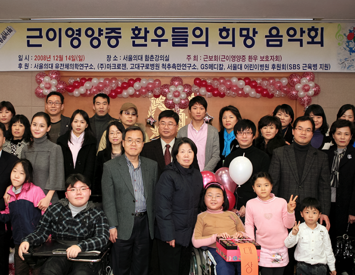

@@include('../../html/include/components/header-white.html')
사회공헌
함께하는 미래를 위해 사회적 책임을 실천합니다
대한민국의 과학자를 응원하고
인류의 건강한 삶을 위해 후원합니다
@@include('../../html/include/components/scrollWrap.html')
마크로젠은 대한민국의 미래를 응원하고 지원합니다
강한 책임감과 소명의식을 지닌 마크로젠은 앞으로 생명공학 분야의 연구자들을 위한 든든한 후원자이자 국가 기술경쟁력 강화의 중심축 역할로서 맡은바 사회적 책임을 다할 것입니다.
마크로젠 과학자상
현재 생명공학은 IT분야와 함께 미래 국가경제를 견인할 신성장동력으로 새롭게 자리매김하고 있습니다.
특히 생명공학은 생물체를 이용하여 새로운 혁신기술을 개발하는 응용과학으로서 의약, 농업, 에너지, 환경 등 다양한 산업 분야에 활용되어 향후 미래의 고부가가치 산업으로 성장하는 데 없어서는 안될 중요한 역할을 담당하고 있습니다. 앞으로 우리 국가경제의 미래는 자신의 분야에서 끊임없이 정진하고 있는 우수한 생명과학도의 손에 달려 있다고 해도 과언이 아닙니다.
마크로젠 과학자상은 기초 생명공학 분야에서 탁월한 업적을 이룬 국내 과학자를 격려하고 지원하기 위해 마련된 상입니다.
마크로젠 여성과학자상
‘마크로젠 여성과학자상’ 은 기초생명과학 분야에서 높은 역량을 지닌 여성과학자들에 대한 지원이 활발히 이루어질 수 있도록 마련된 상입니다.
대한민국 생명공학분야의 여성과학자들은 학문에 대한 강한 사명감과 끊임없는 연구개발을 바탕으로 우수한 연구성과들을 창출함으로써 국가를 넘어 세계 과학발전에 기여해왔습니다.
이러한 흐름을 반영하듯 정부는 2002년 ‘여성과학기술인 육성 및 지원에 관한 법률’을 제정하였으며, 해당 법률에 의거하여 중장기 정책목표와 방향을 설정함으로써 이공계 연구직·기술직에 종사하는 여성과학자를 육성하기 위한 다양한 정책들을 지원하고 있습니다.
마크로젠은 학문에 대한 강한 열정과 섬세함, 그리고 유연한 리더십 등 다양한 장점을 겸비한 여성과학자들이 무한한 재능과 더 큰 가능성을 펼쳐나갈 수 있도록 함께 응원하고 지지합니다.
마크로젠 젊은 생명정보 학자상
‘마크로젠 젊은 생명정보학자상’은 생명정보학 분야에서 전도유망한 국내 신진 과학자를 지원합니다.
마크로젠이 지원하고 한국생명정보학회가 주최하는 ‘마크로젠 젊은 생명정보학자상’은 2019년에 제정되었으며, 과학 분야에서 탁월한 연구실적을 달성한 신진 과학자를 발굴하고 격려하기 위해 마련되었습니다. 마크로젠은 앞으로 생명정보학 분야의 높은 잠재력을 지닌 신진 과학자를 후원하여 국내 과학기술의 경쟁력을 강화하고 생명과학 발전을 위해 아낌없이 지원하겠습니다.
근보회 활동후원
‘근보회’는 유전자 이상에 의해 발생하는 근육질환인 근이영양증을 앓고 있는 환우와 가족들의 모임으로서 1999년 11월 발족한 비영리 민간단체입니다.

마크로젠은 근보회 활동을 후원합니다
근보회는 근보회 환우를 위한 복지혜택, 오프라인 정기모임, 근이영양증 환우 진단 및 간병을 위한 상담서비스 제공 등 근이영양증을 알리는 활동과 함께 그 치료법 등을 찾는 데 도움을 줄 수 있도록 다양한 활동들을 지속하고 있습니다.
마크로젠은 근이영양증 연구자들을 물색하여 이들이 희귀질환을 연구할 수 있도록 지원하고 있으며 환우들과 회사임직원이 함께하는 봄나들이, 작은 음악회 등 정기적인 근보회 활동을 통해 친목 도모 및 상호교류의 장을 만들어 가고 있습니다.
마크로젠은 근이영양증 연구자들을 물색하여 이들이 희귀질환을 연구할 수 있도록 지원하고 있으며 환우들과 회사임직원이 함께하는 봄나들이, 작은 음악회 등 정기적인 근보회 활동을 통해 친목 도모 및 상호교류의 장을 만들어 가고 있습니다.

근이영양증 (Muscular dystrophy)이란?
유전적인 요인으로 진행성 근력저하 및 위축을 보이고 병리학적으로 근육섬유의 괴사 및 재생을 특징으로 하는 퇴행성 근육병증을 말합니다. 이는 디스트로핀(dystrophin) 유전자 등 유전자 돌연변이에 의해 특정 단백이 소실되어 근세포막의 손상으로 근육섬유의 괴사와 퇴행 과정을 거쳐 결국 근력저하 및 위축이 발생하게 되는 질환입니다. 해당 질환이 발생하는 유전적 원인으로는 50-60%가 유전자 결실에 의하여 발생하며 나머지 40-50%는 점 돌연변이, 미세 결손, 중복 등이 그 원인으로 알려져 있습니다.